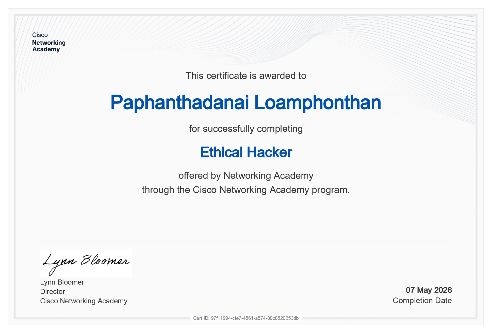
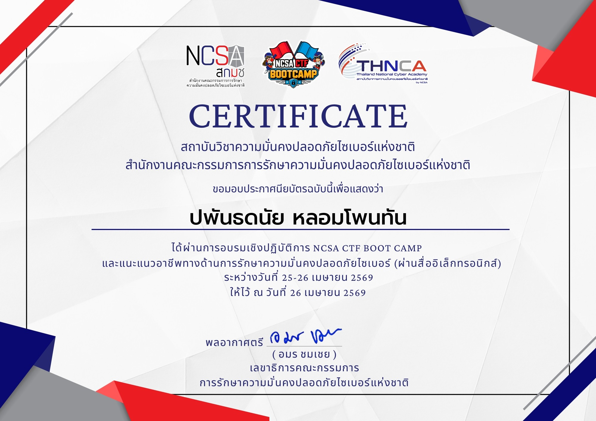
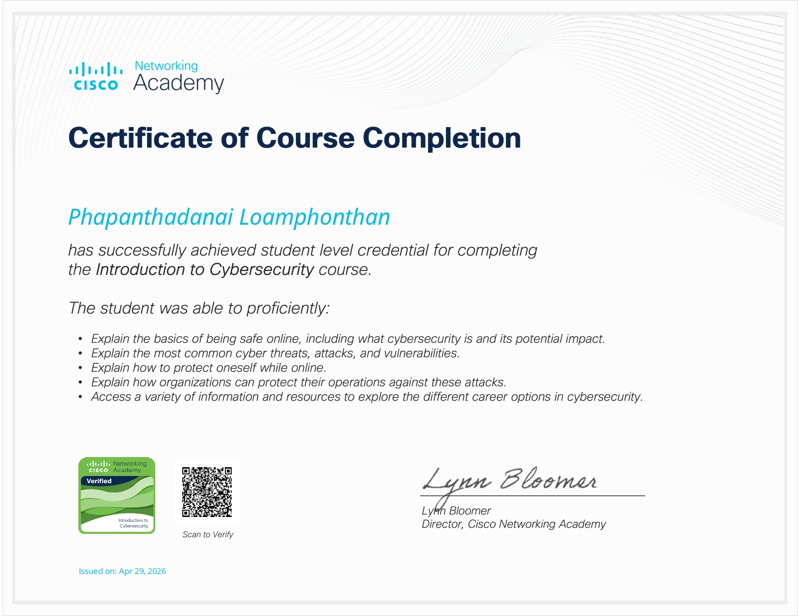
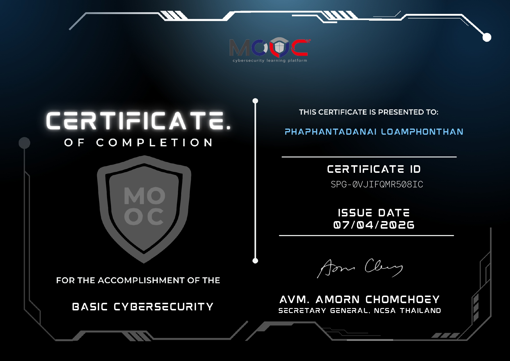

01 / Recon mindset
Offensive security fundamentals
I focus on understanding how attackers think: reconnaissance, scanning, surface mapping, and identifying where security assumptions fail before exploitation even begins.
D0R07HY / Computer Science Student / Aspiring Penetration Tester
I am a second-year Computer Science student at Mahasarakham University building a portfolio around offensive security, hands-on lab work, and continuous cybersecurity learning. My goal is to grow from structured coursework into real penetration testing practice through labs, CTFs, reconnaissance exercises, and disciplined technical study.
This version of my portfolio is designed to present not just interest, but direction. It highlights where I am now, how I practice, and what kind of cybersecurity work I am deliberately preparing for next.
I focus on understanding how attackers think: reconnaissance, scanning, surface mapping, and identifying where security assumptions fail before exploitation even begins.
My strongest learning happens through active practice. I regularly explore wargames, CTF-style environments, and guided cybersecurity material to turn abstract concepts into repeatable workflows.
I am still in the student phase, so I position myself honestly: not as a finished expert, but as someone building solid foundations with clear goals in penetration testing and red team methodology.
My path is a mix of university study, certification milestones, and independent practice. The point is steady compounding: every lab, every challenge, and every certificate sharpens the next step.
I am studying Computer Science while shaping my learning around cybersecurity topics that support offensive work: networking awareness, systems thinking, command-line confidence, and analytical problem solving.
I spend time on exercises such as OverTheWire-style challenges, scanning practice with Nmap, and CTF-oriented problem solving. These activities help me connect theory with methodical execution.
The near-term goal is to keep strengthening portfolio evidence through learning artifacts, technical practice, and better documentation. The long-term goal is graduate study in Germany and a stronger path into offensive security roles.
This is the stack I currently associate most with my learning path. It is intentionally honest: these are areas I am practicing, not empty buzzwords added just to fill space.
These certificates mark the path I have already started. They are not the end goal, but they do show consistency, curiosity, and a willingness to invest time into structured progress.

Focused on ethical hacking concepts and structured exposure to offensive security thinking.
Open verification
Evidence of direct exposure to competitive security problem solving and challenge-based learning.
Open certificate
Built stronger grounding in cybersecurity concepts, terminology, and the broader security landscape.
Open verification
Structured learning around essential security principles and practical awareness for future specialization.
Open verification
Supports cleaner version-control habits, collaboration readiness, and a more disciplined project workflow.
Open verificationIf you are looking for a student who is genuinely committed to cybersecurity growth, I would be glad to connect. I am especially interested in opportunities that strengthen offensive security fundamentals, practical lab experience, and disciplined technical development.
Best fit: internships, student collaborations, CTF teams, and communities that value consistent hands-on improvement.
If you want to support the labs, certifications, and self-study work behind this portfolio, you can do that here.